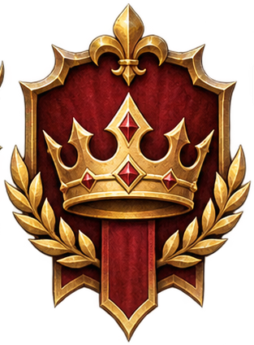
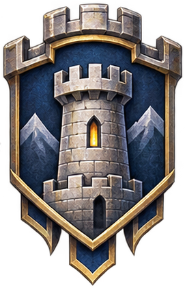
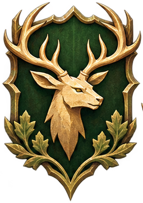
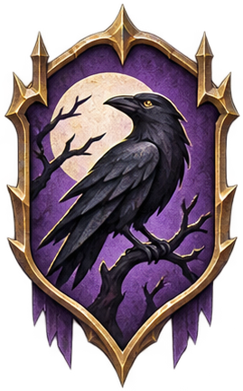
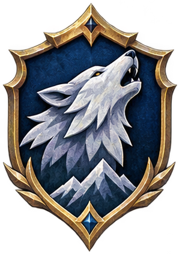
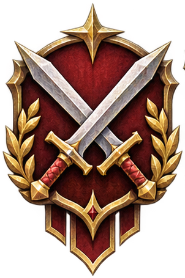

Logo: Chris Fred Däubner, für Daniel Kössl entworfen.
Du baust Siedlungen auf, erforschst Handwerk und Kampf, öffnest Portale in sechs Welten
und handelst mit fünf Nachbarn — in einem Spiel, das auf deinem Rechner läuft, ohne Anmeldung und ohne Netz.
Jedes Haus hat ein Wappen und eine Heimat — deine Wahl bestimmt, wo du beginnst.

Haus Silberbach
Menschen · Midgard
In Weinrot eine goldene Krone mit roten Rautensteinen, oben eine goldene Lilie.

Haus Hammerhall
Zwerge · Armageddon
In Nachtblau ein steinerner Rundturm mit leuchtendem Fenster, goldener Zinnenrahmen.

Haus Sternenwacht
Elfen · Valhalla
In Dunkelgrün ein goldener Hirschkopf, das Geweih über den Schildrand ragend.

Haus Schattenfaust
Trolle · Utgard
In Violett ein schwarzer Rabe auf kahlem Ast vor blassem Vollmond.

Haus Knochenmoor
Ghule · Ragnarök
In Blau ein silberner Wolfskopf mit goldenem Auge über drei Berggipfeln.

Haus Flickwerk
Gnome · Limbus
In Karminrot zwei gekreuzte Schwerter, oben ein goldener vierzackiger Stern.
Was diese Vorabversion nicht ist
Kein fertiges Spiel — eine Vorabversion, ohne Kompatibilitätszusage.
Kein Ton, keine Musik. Die Oberfläche ist eine Windows-Oberfläche mit Ingame-Fenstern.
Nur auf Windows getestet (Windows 11, 64 Bit). Windows 10, ARM und kleine Bildschirme sind ungeprüft.
Zwei Kampfregeln sind noch offen: die Fluchtformel und eine Mauerreparatur-Sonderregel aus dem Handbuch.
Die Admin-Werkzeuge sind in dieser Fassung gesperrt; sie gehören zur Entwicklerfassung.
SmartScreen kann bei unbekanntem Herausgeber warnen. Die Prüfsumme steht in SHA256SUMS.txt im ZIP.
Hier kommt ein Bildschirmfoto aus V_0.0.3 hin. Es wird aus dem laufenden Spiel
aufgenommen — Dorfzentrum mit Ressourcenleiste, in 1600 × 900, ohne Windows-Rahmen. Solange es
fehlt, steht hier ehrlich ein Platz und kein fremdes Bild.
Was drin ist
6Häuser und Welten
20Gebäude
21Forschungen
28Einheiten
Dazu neun Rohstoffe von Holz bis Wolle, siebzehn Waren aus den Werkstätten,
eine Chronik der Welt und ein Handbuch, an dem sich das Remake prüfen lässt.
In fünf Schritten im Spiel
Das ZIP aus dem Bereich Releases herunterladen (rund 102 MB).
Entpacken — der Ordner Demo entsteht dabei.
Nebelseetal_Pre_Release_V_0.0.3.exe starten.
Ein Passwort setzen; der Spielstand bleibt auf deinem Rechner.
Das Dorfzentrum öffnet sich — dort steht der nächste Schritt.